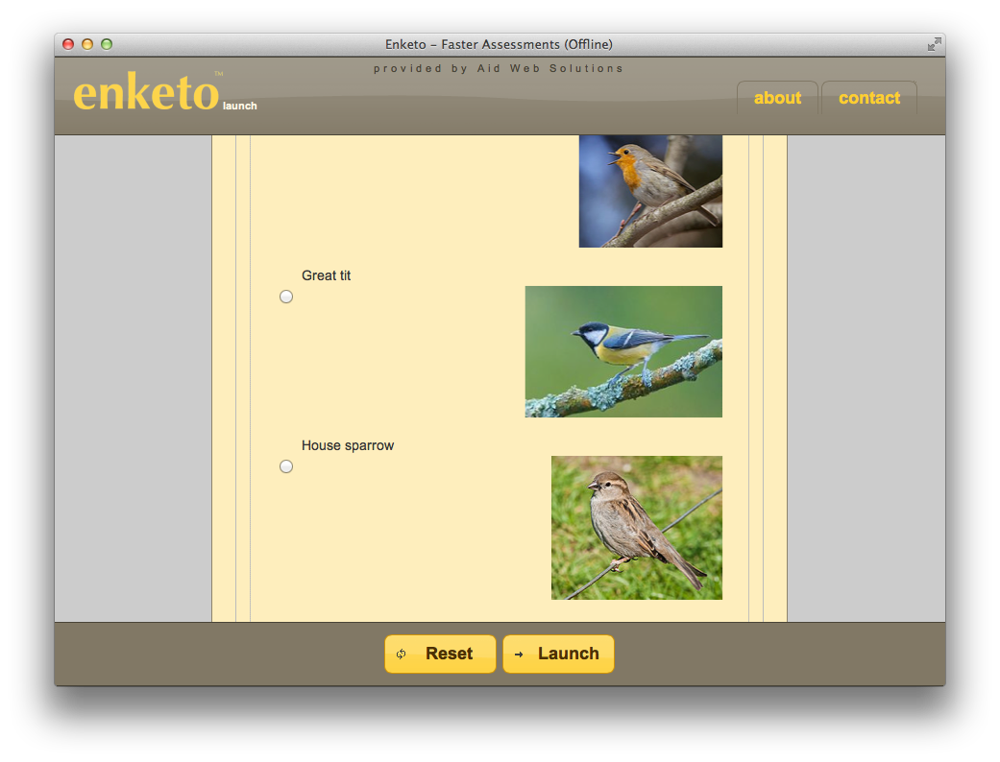
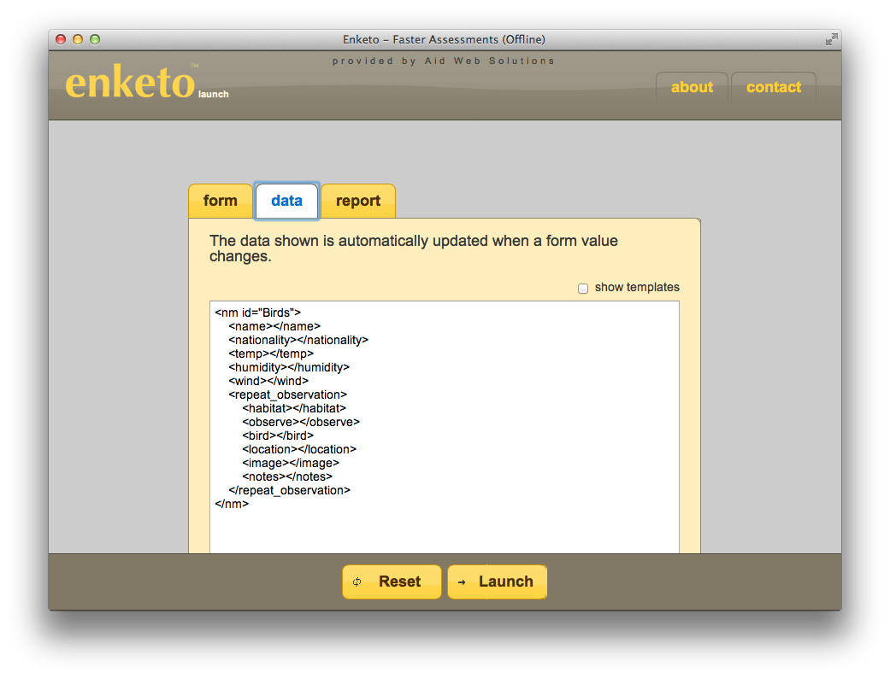
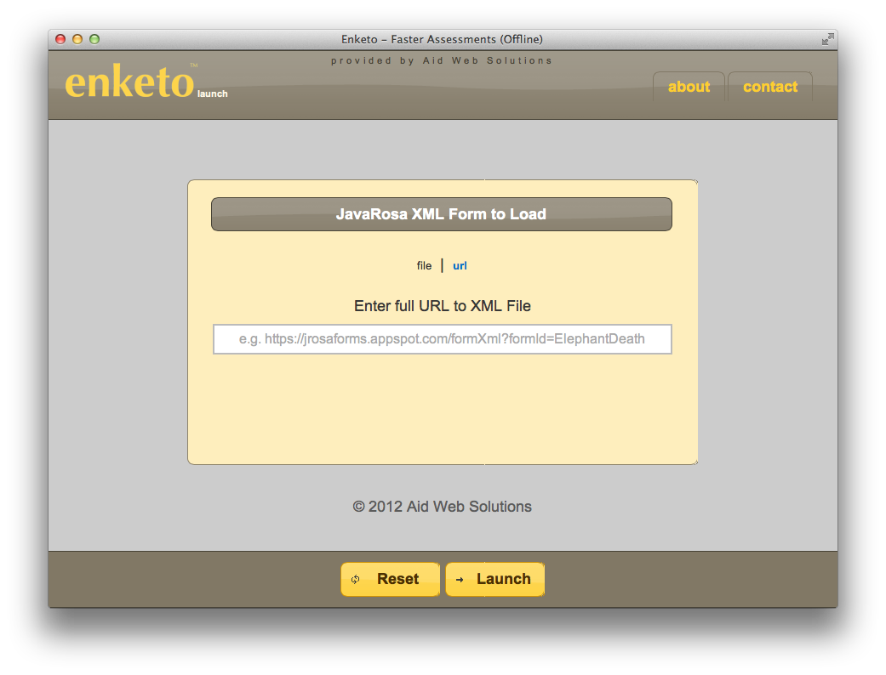
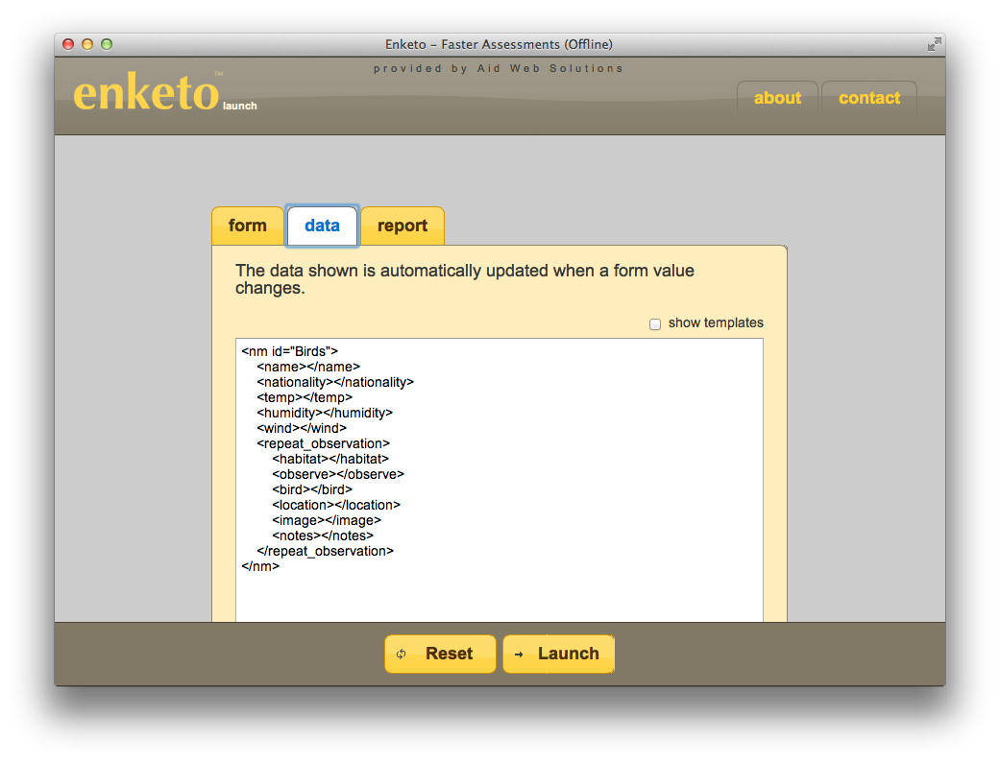
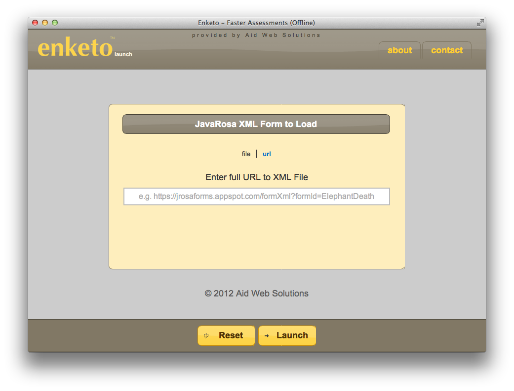

Quick look at enketo’s launch area
I would like to share some screenshots of enketo’s launch area. This is the component that survey administrators (not the average user) will use to test and launch survey forms (after uploading the XForm file or providing the formhub or ODK Aggregate URL). At the moment I’m using enketo’s launch area to find bugs in the transformation from XML to HTML5 and in the XForm functionality. I’m using its built-in reporting function to find major errors and monitor the instantly-updated data (in XML) whenever input fields change. I should mention that I have not yet started working on fancy form widgets. The appearance and usability of the forms will improve significantly once I reach that stage.
I would welcome any sample forms that you think might be useful during testing!
   
  
[Edited: the name Rapaide was replaced by enketo]